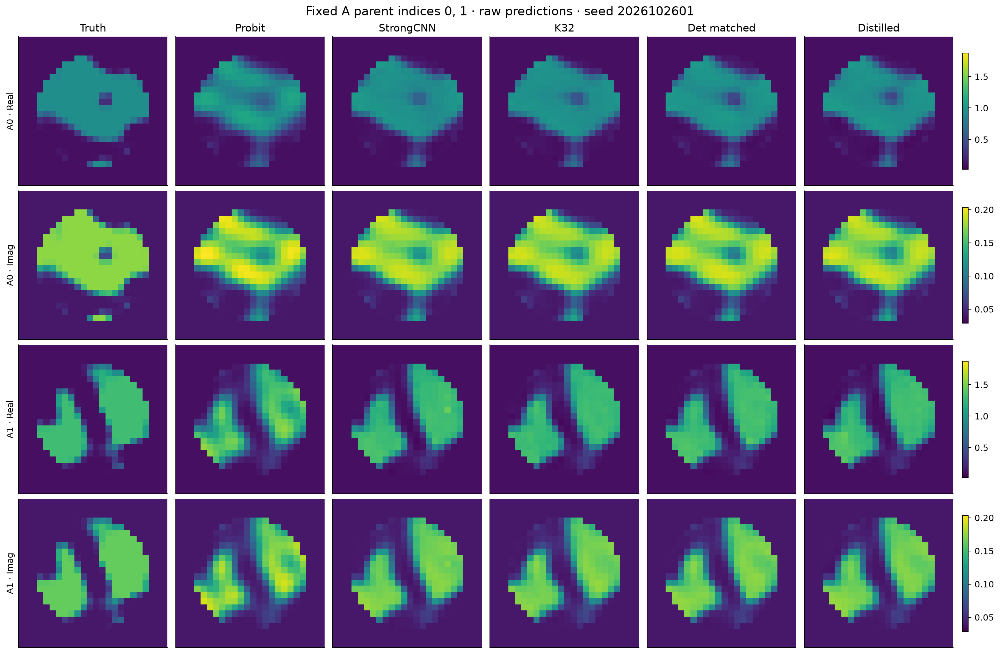

R5-B 独立确认：真实风险收益成立，80%保留率尚未确认
512 个全新 Maxwell 对象、冻结模型、原 Native96 / Probit64、完整预测封存后评分，已全部完成。214272 参数蒸馏器相对 Strong CNN 的 MSE 降低 3.11%，有配对统计支持；但增量保留率仅为 80.70%，调整后的区间为 [60.28%, 113.12%]，不能统计确认至少80%。
| 冻结动作 | Full-grid complex MSE |
|---|
| Physics Probit | 0.010781033 |
| R4 Strong CNN | 0.007221538 |
| 原 Gaussian K32 | 0.006943309 |
| 确定性 Q64 + matched head | 0.006854734 |
| 214k 蒸馏 W128 | 0.006997018 |
确定性 Q64 + matched head 比 K32 的 MSE 进一步低 1.28%，四比较校正后区间排除零。两批均同向。蒸馏器的 batch64 provider 费用降低97.97%，完整学习链降低46.32%；包含平均1.7303秒物理锚点时，推导的全系统节省仅0.0117%，不能称整个 Maxwell 系统快约49倍。
完整中文报告 · A批 · B批 · 512配对统计 · 风险比较 · 完整成本 · 裁决 · Pro交接

固定独立对象，非最佳样本
实际物理费用 1,999,504 / 3,300,000 RHS，56,734 次状态/LU，未新增训练。原 R4/R5、旧验证集结果和原 CPU/MPS FAIL 不改写。新图是监督材料风险动作，不是 posterior 样本；本轮没有 FULL posterior、校准概率或新 Maxwell 专属机制的成功声明。